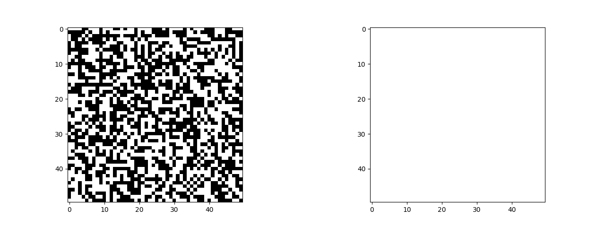
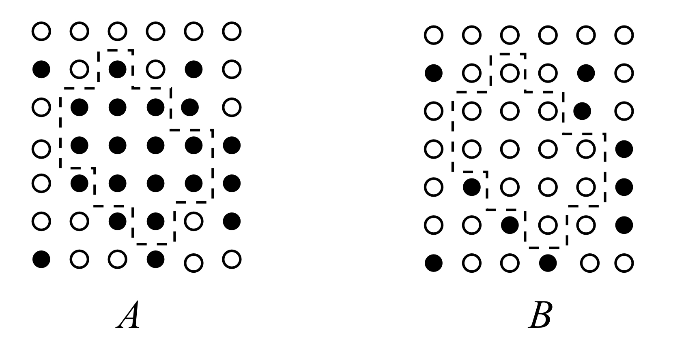
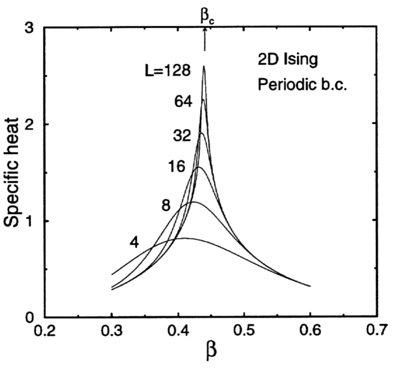
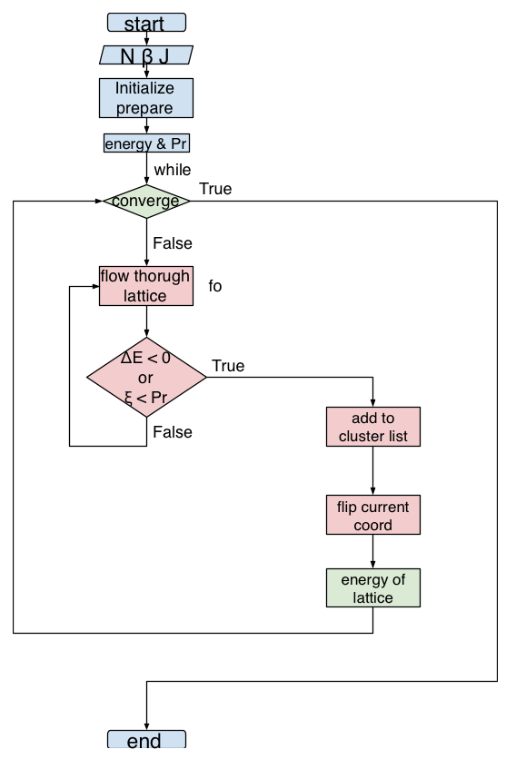
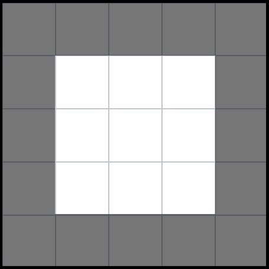
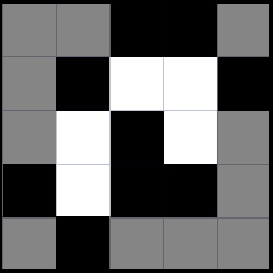
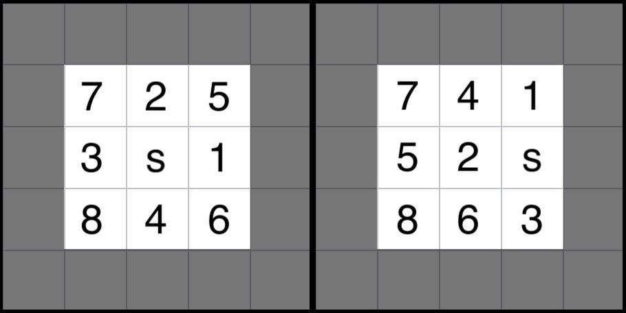
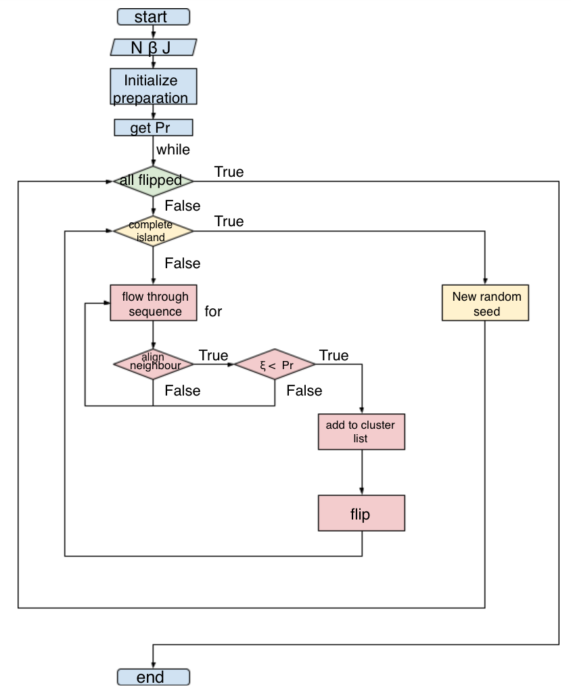

1 Introduction
With the use of Markov Chains, this article aims to make use of Ising model to regenerate the randomness of spin alignment under different temperatures. The effective hamiltonian of the ising model is $$ H = -J \sum_{\left < ij \right>} S_i S_j $$ where critical phenonmenons can only be observed when external magnetic field is insignificant implying that the magnetic moment does not play a significant role s.t. $$ -\mu \sum_j h_j S_j \rightarrow 0$$.
In an ideal ferromagnet, in the absence of an external field, the neighbouring dipoles align parallel tro each other. In order to predict the thermal behaviour of the system, a partition function is calculated by the following expression $$ Z = \sum_{\{S_i\}} \exp \left(-\beta H\right)$$, where \(\beta = 1/k T\), which is the sum over all possible sets of dipole alignments.
1.1 Metropolis algorithm
The main idea of this local updating algorithm is known as Monte Carlo cummation with importance sampling. This algothm generates a subset of syastem states in which lower energy states occur more frequently than higher energy states. The transitio probability is thus $$ \frac{W(1\rightarrow 2)}{W(2\rightarrow 1)} = \frac{(1/N)\exp\left\{-(U_2-U_1)/kT\right\}}{(1/N)} = \frac{\exp\left\{-U_2/kT\right\}}{\exp\left\{-U_1/kT\right\}}$$, which is the ratio of the Boltzmann factors of the two states.
Thus, considering multiple states has transitted in any number of steps, the transition probability remains $$ \frac{W(1\rightarrow \dots\rightarrow 2)}{W(2\rightarrow \dots \rightarrow 1)} = \frac{\exp\left\{-U_2/kT\right\}}{\exp\left\{-U_1/kT\right\}}$$. This speaks for the implementation of algorithm where many iterations of the steps generate many times for every states so the the guarantee of subset generated is an accurate representation for the full collection of all system states. In this scenario, the main concern is that the random states generated provides an accurate illustration of the expected energy and magnetization of the system. It is thus expected that a long time is needed to generate other probable states that differ significantly, that all dipoles are flipped.

|
| Figure 1.1 Local updating scheme: Metropolis algorithm with input parameters \(\{N = 50, \beta = 0.4, J = 1.0\}\) |
1.2 Wolff algorithm
Using the ideas from percolation theory, whole cluster spins are enabled to move in one step which improves the critical aslowing down from local updating scheme. About critical temperature, the spins display critical fluctuations where large aligned apin domains appear. This phenonmenon of critical slowing down reflects the difficulty to change the magnetization of a correlated spin cluster where one center spin has 4 nearest neighbours.
|  |
| Figure 1.2 Block updating scheme: Wolff algorithm with input parameters \(\{N = 50, \beta = 0.4, J = 1.0\}\) |
{kind=link}
The probability to form a cluster of spins in state A before the Wolff flip is the same as state B after the flip. The probability to not add to the cluster is \(1-P_{add}\). \(m\) stands for the non-added aligned spins to cluster in state A while \( n\) stands for the non-added aligned spins to cluster in state B (after flipping all at once) as shown in the figure below.
|  |
| Figure 1.3 Illustration adopted from (Walter, 2014) |
{kind=link}
The transition probability is then written as the following expression$$\frac{W\left(A\rightarrow B\right)}{W\left(B\rightarrow A\right)} = \left(1 - P_{add}\right)^{m-n}$$, where by preserving the detailed balance condition, the transition probability (W) condition is rewritten as $$ \frac{W\left(A\rightarrow B\right)\cdot Y\left(A\rightarrow B\right)}{W\left(B\rightarrow A\right)\cdot Y\left(B\rightarrow A\right)} = \left(1 - P_{add}\right)^{m-n} \frac{Y\left(A\rightarrow B\right)}{Y\left(B\rightarrow A\right)} = \exp\left\{-\beta(E_B - E_A)\right\}$$With \(E_B - E_A = 2J(m-n)\), the acceptance probability ratio remains $$\frac{Y\left(A\rightarrow B\right)}{Y\left(B\rightarrow A\right)} = \left[(1-P_{add})\exp\left\{-2\beta J\right\}\right]^{n-m}$$ Therefore, choosing\(P_{add} = 1-\exp\left\{2\beta J\right\}\), the acceptance probabilities \(Y\left(A\rightarrow B\right) = Y\left(B\rightarrow A\right) = 1\) which flips the spin automatically when the cluster is formed. Thus, one cluster iteration isequivalent to one iteration in Wolff iteration, however, for comparison sake, it is not the case in this implementation, which will be addressed in the later sections.
2 Simulation details
In this article, only ferromagnetic \(J=1\) properties are investigated, due to the limitation of computating resources, only the size of 2500 lattice sites in square lattice is being looked into \(N = 50\). It is therefore a little investigation on the iteration convergence times from varying \(\beta\) of near \(\beta_c\). By using the scaled quantity, we can always write $$ \beta_c \equiv \frac{1}{T_c}$$. The critical (transition) temperature of 2D lattice is \(2.269\) in scaled unit \(\epsilon/k\) (Walter, 2014), where the inverse temperatureis approximately 0.4407. From Hoffmann, as shown in the following figure, the critical inverse temperature lies between 0.4 and 0.5.
|  |
| Figure 2.1 Finit-size scaling behaviour of the specific heat of the 2D Isingmodel on \(L\times L\) lattices to different inverse temperatures. |
{kind=link}
2.1 Local updating scheme
|  |
| Figure 2.2 Local updating scheme flow chart |
Since the standard Metropolis Algorithm is relaized y the local updates of single spin, by the auto correlation, the probability of acceptance is as shown below. $$ W(\{S_i\}\rightarrow\{S_i'\}) = \begin{cases} {\exp\{-\beta \Delta E\}} &, \Delta E > 0\\ {1} &, \Delta E \leq 0 \end{cases}$$
2.11 Preparation and Initialization
The Initialization of lattice array is simply a 2D array of size \(N+2\times N+2\) of elements 1 and -1 using build-in psuedo random number generator. The edge of the lattice is not visible to the user, which only serve as calculation for nearest neighbour interaction energy.
|  |
| Figure 2.3 initialized lattice with expanded invisible edge |
{kind=link}
2.11a Periodic Boundary condition
To apply boundary condition, simply copy the edge to the opposite side of invisible edge. Since the four outermost corners will not be used in the calculation, which are thus unimportant.
|  |
| Figure 2.3 Wolff algorithm flow chart |
{kind=link}
2.12 Precalculation of energy and corresponding boltzmann factors
Considering only nearest neighbours, the change of energy \(\Delta E\) only has 5 possibilies, $$\Delta E \in \{-8J, -4J, 0J, +4J, +8J\}$$, to prevent calculating the boltzmann factor repeatedly, the pre-calculatiuon stores these values and their corresponding boltzmann value into an array for later extraction.
2.13 Main iteration
At (r, c): correspond to the specific coordinate of real lattice (not include the expanded edges)- if \(\Delta E < 0\) or \(\xi < \exp\{-\beta \Delta E\}\) then update \(S_i \rightarrow -S_i\)
- Move to next (r, c)
2.13 Spiral out sequence loop
It is essential to loop through each lattice site without revisiting the visited site. For the cluster algorithm, it is essential to have a fixed visiting agenda such that each outer neighbour sites are visited. The required output for the loop run depends also on the random seed as the center lattice site for the crystal to grow around it.
|  |
| Figure 2.5 Desired output for thesequence of coordinates/ sites visited.\(s\) stands for seed which has no meaning but being the starting lattice site. The figure shows two iteration run for the same lattice with different center. (seed is only important in cluster algorithm.) Which will be further elaborated in the next subsection. |
{kind=link}
This is the reason why from Figure 1.1, the flipping surrounds one random seed. In metropolis algorithm, there is no restriction to the order of the site visited, as long as each site are visited repeatedly. Thus, this is one of the visualization/ implementation to demonstrate the spiral out sequence.
2.2 Block updating scheme: Wolff Algorithm
|  |
| Figure 2.6 Wolff algorithm flow chart |
{kind=link}
We will come back to this later.
3 Theory
4 Wolff algorithm
Unlike the approach of S-W algorithm, wolff algorithm constructs a cluster in which the nearest cluster sites have the same orientation.
A random selection of a site in the system and add its near neighbours with the same spin orientation to the cluster th the probability of \(p=1-q\)